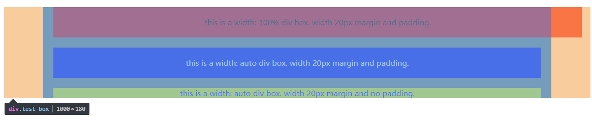
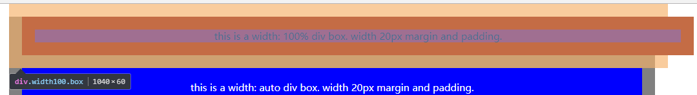
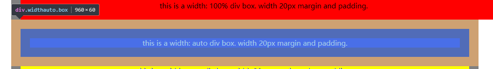
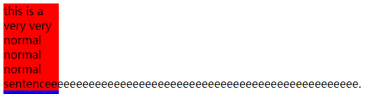
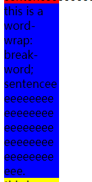
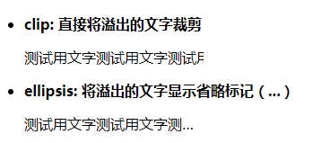
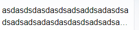
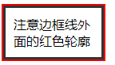

CSS笔记整理
width: 100% 和 width: auto
width: 100%使得内容区为父元素100%的宽度，当存在padding或者margin的时候，元素会跑到父元素外面
而width: auto会使内容区宽度自适应，元素盒模型总是占据父元素的整行。(外边距+边框+内边距+内容区=父元素的宽度）



word-wrap 和 word-break
通常来说，如果什么设置都没有，当遇到一个特别长的单词的时候，如果前面有其他文本，浏览器会尝试将单词移到下一行。
如果下一行也塞不下，就会溢出父元素

而如果设置了word-wrap: break-word;当单词移到下一行还是放不下时，就会将单词在打断在下一行

但是这样的话上一行的空间就被浪费了，所以就有word-break: break-all;所有的单词都会在行尾被打断
break-all会使得单词难以辨认
word-wrap: normal; word-break: break-all;和word-wrap: word-break;的效果看起来是一样的
因为word-break: break-all一旦设置，就不会在发生由于当前行不够位置要移到下一行再判断是否要断词这种情况了。
在只有
word-wrap而没有word-break的时候，如果设置display: box。会使得word-wrap失效
text-overflow: clip | ellipsis
这个属性会使得元素在将要溢出其块元素的时候将其阶段或者显示…
依赖于width和overflow属性，元素必须定义这两个属性，其中overflow不能为visible

line-clamp: Number
可以限制块元素显示的文本的行数
必须依赖display: -webkit-box; -webkit-box-orient; text-overflow三个属性
值为要显示的文本的行数

这个属性支持不是很完善，不在CSS规范草案中，慎用
outline
对象的轮廓，画在border的外面
不同于border，它不会占据布局空间，也不会影响到元素的尺寸

height: 100%和height: auto
height: 100%意味着元素会占据父元素的100%的高度
而height: auto则是自适应的，它的高度取决于它的所有子元素的高度
https://stackoverflow.com/questions/15943009/difference-between-css-height-100-vs-height-auto